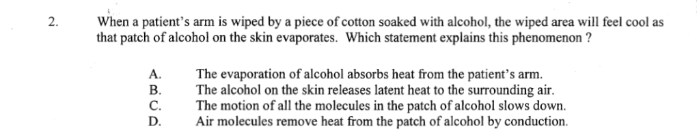

Alcohol evaporating from skin

Section 3.1
A phase change rearranges molecules. Energy transfer changes their bonds, not necessarily their average speed.
Evaporation is the change from liquid to gas at the liquid surface. Molecules have a range of speeds; some surface molecules have enough energy to escape.
Those escaping molecules carry energy away. The remaining liquid has lower average molecular kinetic energy, so its temperature falls unless energy flows in from elsewhere. Condensation is the reverse: gas molecules join the liquid and release energy.
A damp cloth dries in moving air. Why can the cloth cool?
B. Escaping molecules remove energy, reducing the average kinetic energy left in the liquid. A reverses the change; C ignores evaporation; D condensation releases energy.
| Condition | Effect on net evaporation |
|---|---|
| Higher temperature | More molecules can escape each second. |
| Larger exposed surface | More molecules are at the surface. |
| Lower humidity | Fewer vapour molecules return to the liquid. |
| Moving air | Air carries vapour away, reducing its return. |
In a sealed space, vapour molecules also return to the liquid. At equilibrium, escape and return rates match; there is no net change of state.
Which change most directly reduces the return of water molecules to a drying surface?
D. Moving air removes nearby vapour. A and B lower escape; C increases vapour return.
Boiling is rapid vaporization throughout a liquid at its boiling point. Evaporation occurs at the surface and can happen below that temperature.
During boiling, energy continues to enter the liquid. It enables molecules to separate rather than raising their average kinetic energy, so the temperature remains steady while the phase change continues.
Which observation distinguishes boiling from evaporation?
A. Boiling creates bubbles throughout. The other descriptions can also apply to evaporation.
Melting absorbs energy as molecules break from fixed positions. Freezing releases energy as molecules form a solid arrangement.
At the melting or freezing point, energy transfer changes the fraction of solid and liquid. The temperature remains constant until the phase change ends. The melting point of a pure substance equals its freezing point.
Ice melts at its melting point while heat enters it. What happens to the average molecular kinetic energy during the phase change?
C. Temperature and average kinetic energy stay constant during melting; the energy raises molecular potential energy.